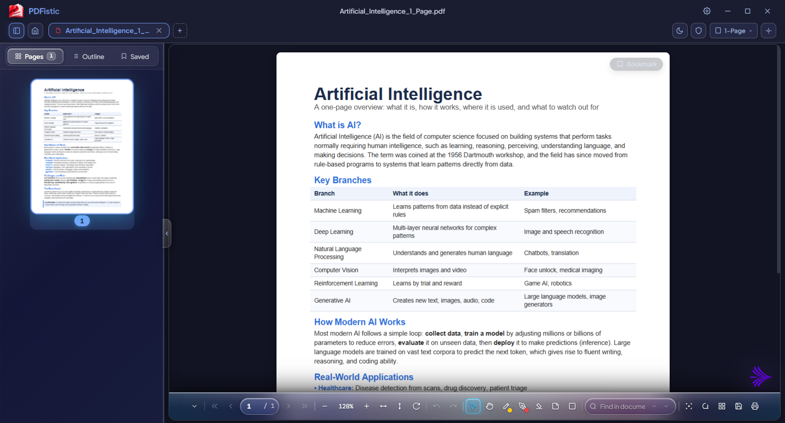
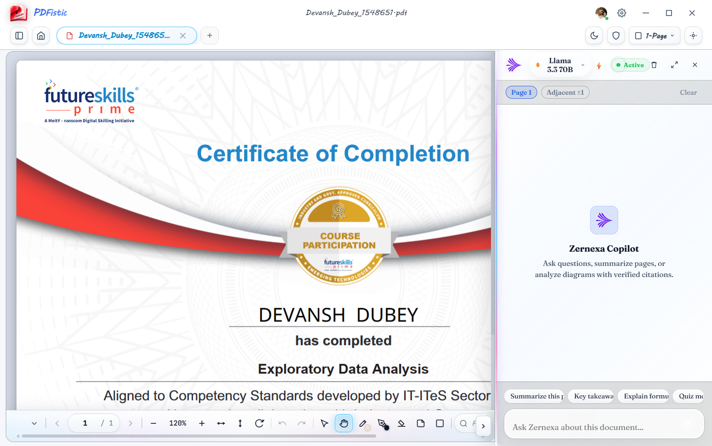
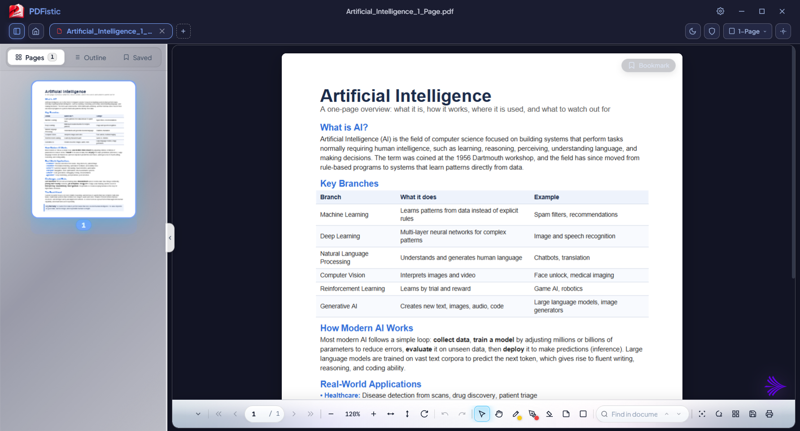

READING
Read like real paper, day or night
Two pages side by side like an open book, or plain scroll if you prefer. Big textbooks stay smooth. Pick Day, Paper or Night.
Flip pages like real paper, highlight and annotate, and ask AI about anything you're reading.
Your files stay on your PC.
Open a PDF or EPUB, flip through it, mark it up, and ask AI when you're stuck. Your files stay on your PC.
Two pages side by side like an open book, or plain scroll if you prefer. Big textbooks stay smooth. Pick Day, Paper or Night.
No sign-up, no ads, no cloud uploads. Your books, notes and signatures are saved on your computer and nowhere else.
Highlight lines, write notes with a pen, sign forms, and search or copy text from scanned pages.
Highlight the paragraph, ask for a short summary or a simpler explanation, and read the answer next to your page.

Read with two-page spreads, page turns, and controls made for long reading sessions.

Open two documents next to each other with synced scrolling so you can compare pages and notes.

Ask questions about hard passages, summarize chapters, and copy or search words even inside scanned pages.

Your books and notes never leave your Windows PC. Nothing tracks what you read, and your saved keys stay locked on your device.

Protect your eyes at any hour by switching between daylight contrast, warm paper, and dark mode.